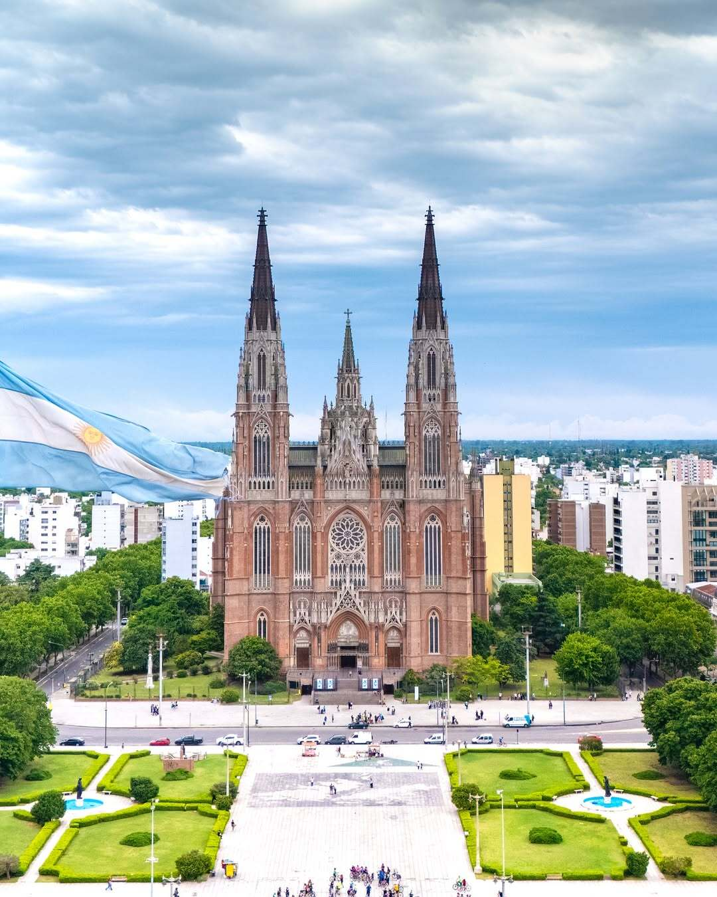
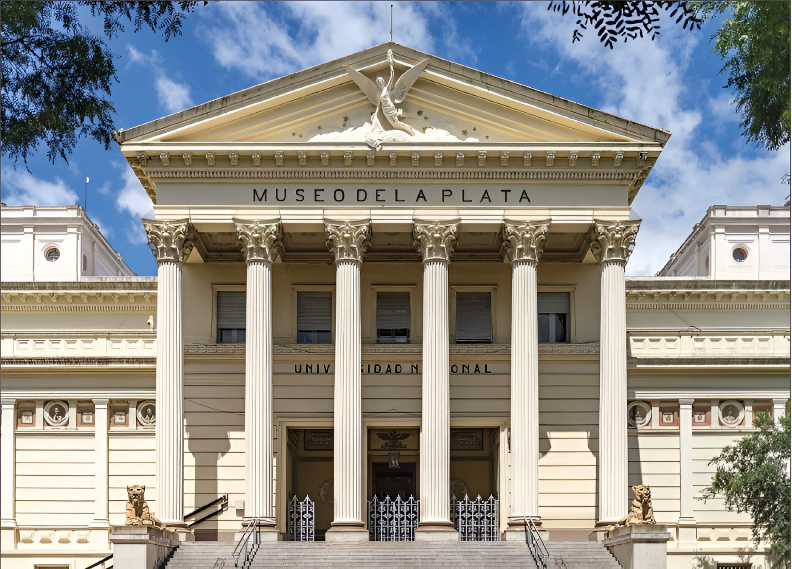
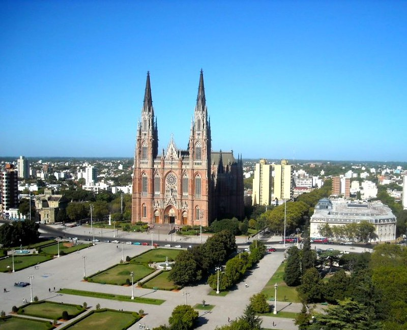
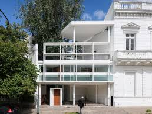
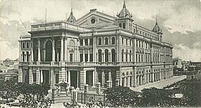
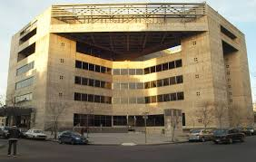
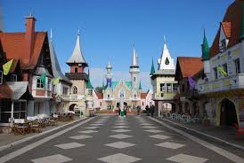
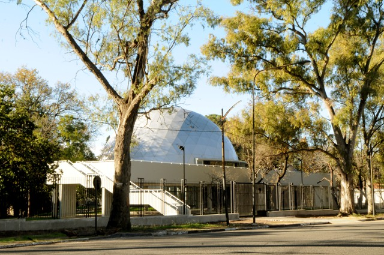

Catedral de La Plata
Una de las catedrales más importantes de América y una de las iglesias más grandes del mundo. La Catedral de La Plata presenta un estilo neogótico y tiene una gran cantidad de detalles arquitectónicos impresionantes, como sus torres gemelas, rosetones, vidrieras y detalles en relieve. Además de ser un lugar de culto, la catedral es también un importante lugar turístico y cultural de la ciudad, que atrae a visitantes de todo el mundo.

Museo de Ciencias Naturales
Este es uno de los museos más importantes del país, contando con una amplia colección de ciencias naturales, incluyendo fósiles, minerales y objetos de historia natural. Contando la historia desde la creación de la Tierra hasta el origen del ser humano, el Museo de La Plata es recorrido por turismo nacional e internacional.

Plaza Moreno
Uno de los puntos característicos de la capital de la provincia es la Plaza Moreno, una amplia plaza rodeada de edificios gubernamentales y culturales. En sus alrededores se encuentra el Palacio de los Deportes y el Teatro Argentino. La ciudad capital se caracteriza por su diseño urbanístico, desarrollado en torno a sus parques y plazas más importantes. En La Plata podrás disfrutar de muchos parques y espacios verdes donde hacer picnic, practicar deportes, hacer senderismo y más.

Casa Curutchet
La Casa Curutchet, es especial por ser la única obra de vivienda construida por el célebre arquitecto Le Corbusier en América del Sur y Patrimonio de la Humanidad por la UNESCO. Diseñada entre 1949 y 1953, es un ejemplo maestro de la arquitectura moderna que integra vivienda y consultorio, destacando por su uso de pilotes, planta libre, terraza jardín, parasoles y una rampa central que conecta los espacios. La dirección es avenida 53 N.º 320, entre 1 y 2.


Teatro Argentino
Uno de los complejos artísticos más importantes de América Latina. Ubicado en la manzana delimitada por las avenidas 51 y 53 y las calles 9 y 10, es una "fábrica de arte" que produce íntegramente sus óperas, ballets y conciertos. El proyecto de construcción fue llevado adelante por Leopoldo Rocchi, arquitecto italiano, quien ideó una estructura según los modelos de su país, dotando a la construcción de un estilo renacentista. Las obras comenzaron en 1887, con un tiempo estimado de tres años. En 1977, durante un habitual ensayo del ballet estable, un incendio, que se sospecha intencional, en pocas horas redujo a cenizas la sala de estilo renacentista. Solo permanecieron en pie el foyer y las paredes perimetrales.El gobierno militar de entonces, a pesar de los fuertes reclamos de la sociedad argentina e internacional por la reconstrucción del edificio, decidió demolerlo y llamó a un concurso público para la construcción, en el lugar, de un nuevo y moderno centro cultural que continuará la gloria del antiguo Teatro Argentino. Las obras comenzaron en 1980 en 1984 se terminó de construir, pero éstas sufrieron constantes retrasos y paralizaciones. Finalmente, casi dos décadas más tarde, el 12 de octubre de 1999 se inauguró el nuevo edificio.

República de los Niños
Parque educativo ubicado en Gonnet. Es considerado el primer parque temático de América y reproduce un conglomerado urbano y rural en escala acorde a niños de 10 años, con todas las instituciones correspondientes al sistema democrático: parlamento, casa de gobierno, palacio de justicia, iglesia, puerto, teatro, aeropuerto, restaurantes, hoteles, etc. Fue construida por el Instituto Inversor de la Provincia de Buenos Aires en 50 hectáreas de un predio que perteneciera al campo de golf «Swift Golf Club» e inaugurada el 26 de noviembre de 1951 por el presidente Juan Domingo Perón.[ Su similitud arquitectónica con Disneyland permitió el surgimiento de un mito urbano, el cual afirma que Walt Disney se inspiró en este parque para fundar varios años después el ubicado en California.

Planetario
Planetario situado en el Paseo del Bosque. Inaugurado el 26 de junio de 2013 y considerado uno de los más modernos de América Latina. Ofrece proyecciones digitales y más actividades. Es una institución pública donde todas las actividades que se desarrollan son de carácter libre y gratuito.